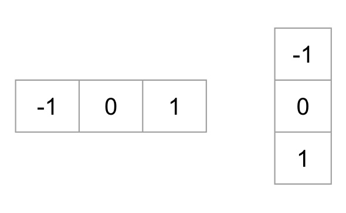
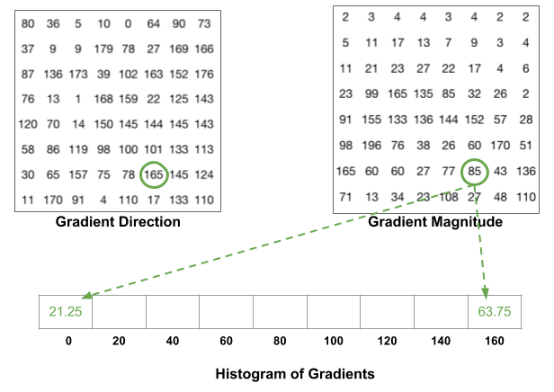
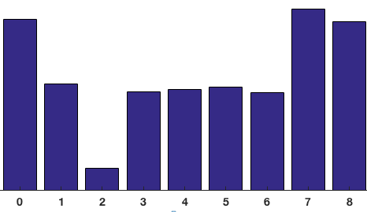
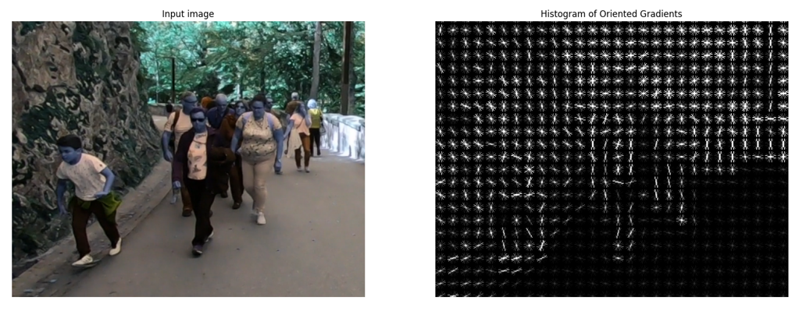
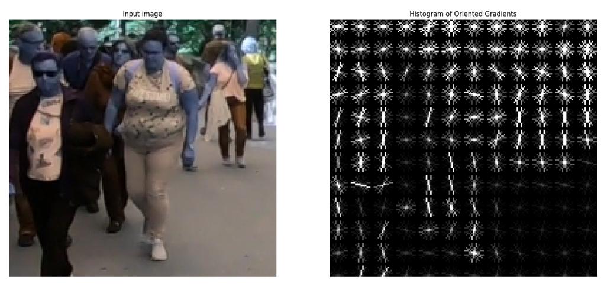

Histogram of oriented gradient, HOG
简介
方向梯度直方图 (Histogram of oriented gradient, HOG) 是应用在计算机视觉和图像处理领域，用于目标检测的特征描述器。这项技术是用来计算局部图像梯度的方向信息的统计值。这种方法跟边缘方向直方图 (edge orientation histograms)、尺度不变特征变换 (scale-invariant feature transform descriptors) 以及形状上下文方法 (shape contexts) 有很多相似之处，但与它们的不同点是：HOG 描述器是在一个网格密集的大小统一的细胞单元 (dense grid of uniformly spaced cells) 上计算，而且为了提高性能，还采用了重叠的局部对比归一化 (overlapping local contrast normalization) 技术。
方法首见于 Histograms of Oriented Gradients for Human Detection，发表在2005年 CVPR 上。
算法计算步骤概览：
- 图像预处理。伽马矫正 (减少亮度影响) 和灰度化 (也可以在RGB图上做，只不过对三通道颜色值计算，取梯度最大的) [可选]
- 计算图像像素点梯度值，得到梯度图 (尺寸和原图同等大小)
- 图像划分多个 cell，统计 cell 内梯度直方图
- 将 $2\times 2$ 个 cell 联合成一个 block，对每个 block 做块内梯度归一化
以下将分别介绍这几个步骤。
图像预处理
作用：gamma 矫正通常用于电视和监视器系统中重现摄像机拍摄的画面．在图像处理中也可用于调节图像的对比度，减少图像的光照不均和局部阴影。
原理： 通过非线性变换，让图像从曝光强度的线性响应变得更接近人眼感受的响应，也就是将漂白（相机曝光）或过暗（曝光不足）的图片，进行矫正。
gamma 矫正公式：
$$
f(x)=x^\gamma
$$
输出是输入的幂函数，指数为$\gamma$，典型的Gamma值是0.45。
计算图像像素梯度图
对于一个像素点 $L(x,y)$ 来说，在水平方向和竖直方向有两个梯度 $g_x$ 和 $g_y$：
$$
g_x=\frac{L(x+1,y)-L(x-1,y)}{2}\
g_y=\frac{L(x,y+1)-L(x,y-1)}{2}
$$
总的梯度大小为：
$$
g=\sqrt{g_x^2+g_y^2}
$$
梯度的方向为：
$$
\theta(x,y)=\arctan {\frac{g_y}{g_x}}
$$
梯度方向取绝对值，因此得到的角度范围是 $[0°,180°]$。
上面的计算过程，可以用下面的两个 kernel 函数很简单的实现。
我们也可以通过 OpenCV 中 size=1 的 Sobel 算子来实现。代码如下：
1 | |
计算梯度直方图
经过上一步计算，每个像素点会有两个值：梯度方向和梯度大小。
但是，梯度大小和梯度方向图和原图大小相同，如果实际使用这些特征，会有两个问题：
- 计算量很大
- 特征稀疏，图中只有少量特征
所以 HOG 特征选择联合 $8\times 8$ 大小的 cell 内部的像素，计算其梯度幅度和梯度方向的统计直方图。由此一来，需要计算的数值就大量减少了。
梯度方向取值范围为 $[0°,180°]$，以每 $20°$ 一个单元，可以划分为9组。然后把 cell 内部的值先通过角度划分到对应的 bin 内，然后再把大小赋给这个 bin，具体如下图所示。

蓝圈角度为80°，划分到80的 bin，大小2，也赋给这个 bin。红圈角度10°，介于0和20之间，所以两个 bin 各分一半。
这里有一个细节，如果角度大于160，那么我们要考虑均匀分配，如下图。
最终我们可以得到下面这样的直方图：
从上图可以看到，更多的点的梯度方向是倾向于0度和160度，也就是说这些点的梯度方向是向上或者向下，表明图像这个位置存在比较明显的横向边缘。因此HOG是对边角敏感的，由于这样的统计方法，也是对部分像素值变化不敏感的，所以能够适应不同的环境。
至于为什么选取 $8\times 8$ 为一个单元格，是因为HOG特征当初设计时是用来做行人检测的。在行人图片中 $8\times 8$ 的矩阵足以捕获一些特征，比如脸部或者头部特征等。
Block 归一化
目的：降低光照的影响。
方法：向量的每一个值除以向量模长。
HOG 在选取 $8\times 8$ 为一个 cell 的基础上，以 $2\times 2$ 个 cell 为一组，称为 block。每个 cell 有九个向量 (直方图)，那么 $2\times 2$ 个 cell 则有 36 个向量。
代码实例
可以使用 sklearn-image 库中的 hog 函数很简单地实现求一个图片的 HOG，代码如下：
1 | |
实现效果如下：
 